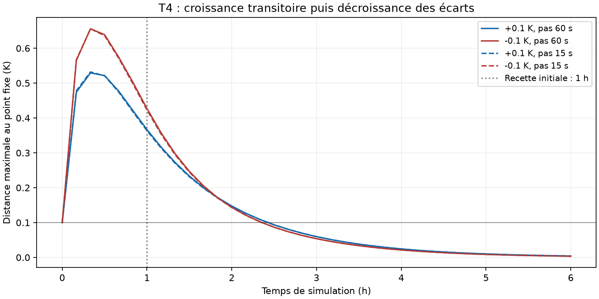
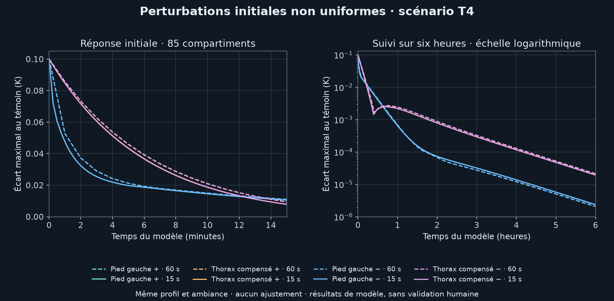

Équilibre numérique reçu ; repos humain et raccord à l’avatar non validés.
Profil de modèle masculin, 30 ans, 1,70 m, 60 kg, debout ; PAR 1,4 selon la table 5 de l’article JOS-3. Air et rayonnement à 28 °C, humidité 40 %, air 0,2 m/s, vêtement 0 clo. Ces conditions sont choisies pour ce scénario ; elles ne reproduisent pas un participant observé.
Code JOS-3 0.5.0, commit 3c74ee2af2f79aa360093cc517e38bf465ec8c5b, licence MIT. Aucun paramètre ajusté. La démonstration T1/T2 à PAR 1,2 reste intacte.
Peau moyenne : 33.679567 °C. Sang central : 36.452544 °C. Ce dernier n’est pas une température rectale mesurée.
Deux états initiaux donnent des solutions séparées de 6.95e-11 K. Les pas 60 s et 15 s satisfont les critères fixés : au plus 0,001 K par compartiment sur dix minutes et stockage moyen au plus 0,05 W en valeur absolue.
Le critère de retour sous 0,1 K après une heure n’est pas satisfait pour les perturbations uniformes de ±0,1 K. Il ne faut donc pas présenter cette recette comme une preuve de repos robuste.
| Pas | Écart initial | Changement maximal sur 600 s | Distance au point fixe après 3 600 s |
|---|---|---|---|
| 60 s | +0.0 K | 4.55e-11 K | 6.913e-11 K |
| 60 s | +0.1 K | 0.374 K | 0.3667 K |
| 60 s | -0.1 K | 0.465 K | 0.427 K |
| 15 s | +0.0 K | 4.62e-11 K | 6.735e-11 K |
| 15 s | +0.1 K | 0.378 K | 0.3634 K |
| 15 s | -0.1 K | 0.467 K | 0.4228 K |
La linéarisation locale a un rayon spectral inférieur à un aux deux pas. Sa norme peut toutefois croître transitoirement (environ 3,88 à une heure au pas 60 s). Cela reste une analyse locale, sans preuve globale non linéaire ni validation expérimentale.
Aucun temps d’initialisation n’est présenté comme une durée vécue par un humain. Aucun résultat n’est envoyé au corps ou aux autres modules.
Article primaire · Takahashi et collaborateurs · Résultats et contrat du scénarioLes quatre essais montrent une croissance transitoire, jusqu’à 0,66 K aux instants échantillonnés, puis une diminution sous 0,005 K à six heures. La recette à une heure reste échouée. Ce diagnostic ne couvre que deux perturbations uniformes, sans preuve globale ni validation humaine.

Les quatre cas localisés passent la borne de 0,1 K à une heure, aux deux pas de calcul. L’échec des perturbations uniformes T4 reste inchangé.
Dix trajectoires de six heures : quatre perturbations et un témoin à chaque pas (60 s et 15 s). Profil et ambiance T4 conservés ; aucun paramètre ajusté. La peau du pied gauche part avec ±0,1 K. Pour le thorax, ±0,1 K sur la peau est compensé par ∓0,004283 K dans le compartiment profond, afin de conserver l’énergie initiale à la précision numérique.
Ce sont des modifications artificielles de l’état initial du modèle. Elles ne représentent ni une exposition thermique mesurée ni une température anatomique enregistrée chez une personne. La correspondance avec la géométrie de l’avatar reste inconnue.

| État initial perturbé | Pas | À 1 h (K) | À 6 h (K) |
|---|---|---|---|
| Pied gauche + | 60 s | 0.000679 | 0.00000207 |
| Thorax compensé + | 60 s | 0.002421 | 0.00002115 |
| Pied gauche − | 60 s | 0.000680 | 0.00000207 |
| Thorax compensé − | 60 s | 0.002421 | 0.00002119 |
| Pied gauche + | 15 s | 0.000646 | 0.00000236 |
| Thorax compensé + | 15 s | 0.002183 | 0.00001934 |
| Pied gauche − | 15 s | 0.000647 | 0.00000235 |
| Thorax compensé − | 15 s | 0.002184 | 0.00001938 |
Le plus grand écart entre les deux grilles est de 0,0059344 K pour le pied et de 0,0025657 K pour le thorax, aux instants communs et sans interpolation. Il s’agit d’une sensibilité au pas, pas d’une borne générale d’erreur. Les traits des courbes relient les échantillons calculés ; ils n’ajoutent pas de mesures.
Les 9 000 pas ont été contrôlés avec les températures et bilans enregistrés ; les opérateurs à 600, 3 600 et 21 600 s ont aussi été résolus indépendamment. Résidu global maximal : 1,88 × 10−10 W ; résidu énergétique cumulé maximal : 8,97 × 10−7 J.
Cette étude bornée ne prouve ni stabilité non linéaire globale ni repos humain complet. Aucun raccord physiologique ou temps biologique commun n’est déduit. Les cas ayant réussi ne remplacent pas les cas uniformes ayant échoué.
Résultats détaillés T30 · Cas et critères figés avant calcul · Contrôle numérique indépendant